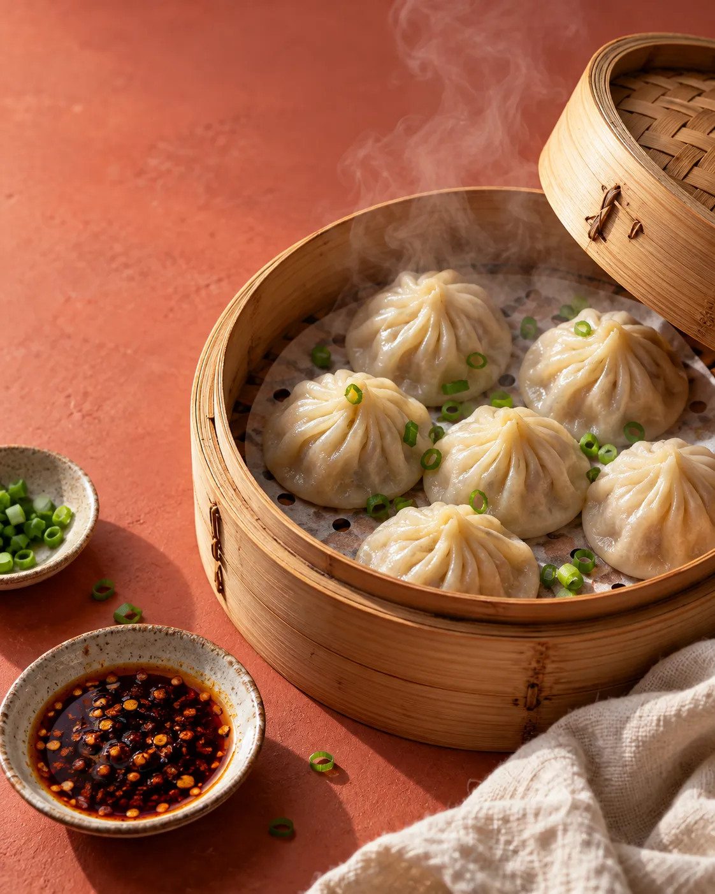
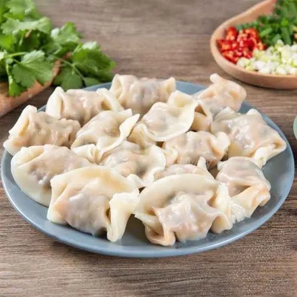

The Handmade
Dumpling table
A restaurant in Queens. Explore a sample menu collection and ask about the dumplings and dishes currently available.
Explore the sample menu →35-46 Union St, Flushing, NY 11354

Find your place to start
Explore the sample menu by collection. The restaurant confirms actual fillings, portions and allergen details.
DumplingsExplore the sample collection, then ask the store about the current range and availability.
Explore dumplings →Demo selection. Confirm products, prices and availability with the store.
A menu to examine
Sample plates demonstrate where the actual menu can show ingredients, portion sizes, prices and current availability.


Handmade in Queens
Handmade Dumpling is at 35-46 Union St, Flushing, NY 11354. Explore the business photographs, then plan a visit or call to ask about the current selection.
Plan your visit →